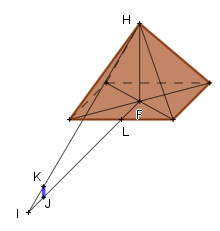

Aufgabe 51 Um die Höhe einer quadratischen Pyramide mit einer Seitenlänge von 240 m zu bestimmen, hat man ihre Spitze über die Spitze eines Stabes angepeilt, der eine Schattenlänge von 3 m hat und 100 m vom Fuß der Pyramide entfernt steht. Wie hoch ist die Pyramide?  Die Dreiecke IJK und IFH sind ähnlich, weil sie in 2 Winkeln übereinstimmen. ∢IJK = 90° und ∢ IFH = 90° und ∢ IJK. IJ = 3 m, IF = IJ + JL + LF = 3 m + 100 m + 240/2 m = 223 m. JK = 2 m. 223 m Ähnlichkeitsfaktor k = -------- 3 m FH k = ----- |*2 2 223 k * 2 = FH = ------ * 2 = 148,7 m 3 oder Strahlensatz: FH 223 ---- = ----- |*2 2 3 FH = 148,7 m oder FH : 2 = 223 : 3 Inneres Produkt = äußeres Produkt FH * 2 = 223 * 3 |:2 FH = 148,7 m